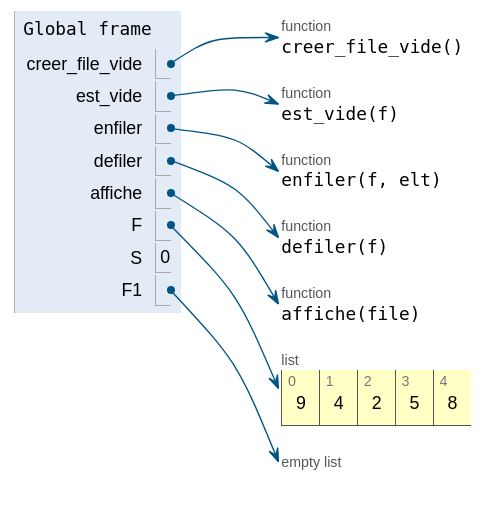
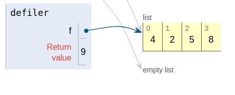
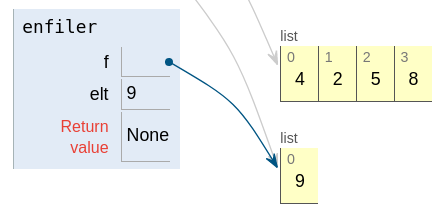

DS 30/11/21
| Devoir : Listes - Piles et Files | Thème 1 : Structures de donnée |
|---|---|
| EVALUATION |
Exercice n°1 :⚓︎
On rappelle qu’une file est une structure de données abstraite fondée sur le principe « premier arrivé, premier sorti » :

On munit la structure de données File de quatre fonctions primitives définies dans le tableau ci-dessous :
Structure de données abstraite : Pile
Opérations :
creer_file_vide: \(\varnothing\) \(\rightarrow\) Filecreer_file_vide()renvoie une file vide
est_vide: File \(\rightarrow\) Booléenest_vide(file)renvoie True si file est vide, False sinon
enfiler: File, Élément \(\rightarrow\) Rienenfiler(file, element)ajoute element à la file
defiler: File \(\rightarrow\) Élémentdefiler(file)renvoie l’élément en tête de la file en le retirant de la file
Question n°1 :
On suppose dans cette question que le contenu de la file F est le suivant
< 9 , 4 , 2 , 5 , 8 <
Quel serait le contenu de la file F1 aprés l'exécution de la suite d'instruction suivante ?
S=0
F1=creer_file_vide()
while not est_vide(F):
S+=defiler(F)
enfiler(F1,S)
Ce script permet de parcourir la file et d'additionner tous les éléments en fonction de son rang.
-
situation de départ
 -
on défile F 
-
on calcule S et on enfile F1 
-
on défile F

-
on calcule S et on enfile F1

-
etc....
< 9 , 13 , 15 , 20 , 28 <
Question n°2 :
On appelle hauteur d’une file le nombre d’éléments qu’elle contient. La fonction hauteur_file prend en paramètre une file F et renvoie sa hauteur. Après appel de cette fonction, la file F doit avoir retrouvé son état d’origine.
Exemple : si F est la file de la question 1 : hauteur_file(F) = 5.
Recopier et compléter sur votre copie le programme Python suivant implémentant la fonction hauteur_file en remplaçant les ??? par les bonnes instructions.
def hauteur_file(F):
Q = creer_file_vide ()
n = 0
while not (est_vide (F)):
???
x = defiler(F)
???
while not (est_vide(Q)):
???
enfiler(F,x)
return ???
def hauteur_file(F):
Q = creer_file_vide ()
n = 0
while not (est_vide (F)):
n=n+1
x = defiler(F)
enfiler(Q,x)
while not (est_vide(Q)):
x=defiler(Q)
enfiler(F,x)
return n
Question n°3 :
Créer une fonction min_file ayant pour paramètre une file F. Cette fonction renvoie la position j de l’élément minimum de la file F.
Après appel de cette fonction, la file F devra avoir retrouvé son état d’origine.
Exemple :
si F est la file de la question 1 : min_File(F) = 2.
def min_file(F):
Q = creer_file_vide ()
mini=defiler(F)
enfiler(Q,mini)
pos=0
posmin=0
while not (est_vide(F)):
x=defiler(F)
pos+=1
if x <mini:
mini=x
posmin=pos
enfiler(Q,x)
while not (est_vide(Q)): #on re-remplit la file F de départ
x=defiler(Q)
enfiler(F,x)
return posmin
Question n°4 :
Créer une fonction sup_element_file ayant pour paramètres une file F et un élément e. Cette fonction supprime l'élément e de la file et renvoie la file F sans cet élément .
Exemple :
si F est la file de la question 1 : sup_element_file(F,4) doit retourner :
< 9 , 2 , 5 , 8 <
def sup_element_file(F,e):
Q = creer_file_vide ()
while not (est_vide (F)):
x=defiler(F)
if x!=e:
enfiler(Q,x)
while not (est_vide(Q)):
x=defiler(Q)
enfiler(F,x)
return F
Question n°5 :
On donne la foncton suivante qui renvoie la valeur du minimum de la file F.
def valeur_min_file(F):
Q = creer_file_vide ()
min=defiler(F)
enfiler(Q,min)
while not (est_vide (F)):
x=defiler(F)
if x <min:
min=x
enfiler(Q,x)
while not (est_vide(Q)):
x=defiler(Q)
enfiler(F,x)
return min
Créer une fonction sup_min_file ayant pour paramètre une file F. Cette fonction supprime le minimum de la file et renvoie la file F sans cet élément.
Exemple :
si F est la file de la question 1 : sup_min_File(F) doit retourner :
< 9 , 4 , 5 , 8 <
def sup_min_file(F):
x=valeur_min_file(F)
F=sup_element_file(F,x)
return F
Question n°6 :
On donne la fonction suivante :
def mystere_file(F):
Q = creer_file_vide ()
while not (est_vide (F)):
e=valeur_min_file(F)
enfiler(Q,e)
sup_min_file(F)
while not (est_vide(Q)):
x=defiler(Q)
enfiler(F,x)
return F
Cette fonction renverse la file : < 2 , 4 , 5 , 8 , 9 <
Exercice n°2 :⚓︎
On choisit de stocker les données des processus en attente à l'aide d'une liste Python lst.
On dispose déjà d'une fonction retirer(lst) qui renvoie l'élément lst[0] puis le supprime de la liste lst.
Question 1
On choisit de stocker les données des processus en attente à l'aide d'une liste Python lst.
On dispose déjà d'une fonction retirer(lst) qui renvoie l'élément lst[0] puis le supprime de la liste lst.
Écrire en Python le code d'une fonction ajouter(lst, proc) qui ajoute à la fin de la liste lst le nouveau processus en attente proc.
def ajouter(lst,proc):
lst.append(proc)
On choisit maintenant d'implémenter une file file à l'aide d'un couple (p1,p2)où p1 et p2 sont des piles.
Ainsi file[0] et file[1] sont respectivement les piles p1 et p2.
Pour enfiler un nouvel élément elt dans file, on l'empile dans p1.
Pour défiler file, deux cas se présentent.
- La pile
p2n'est pas vide : on dépilep2. - La pile
p2est vide : on dépile les éléments dep1en les empilant dansp2jusqu'à ce quep1soit vide, puis on dépilep2.

Question 2
On considère la situation représentée ci-dessous.

On exécute la séquence d'instructions suivante :
enfiler(file,ps6)
defiler(file)
defiler(file)
defiler(file)
enfiler(file,ps7)
Représenter le contenu final des deux piles à la suite de ces instructions.

Question 3
On dispose des fonctions :
empiler(p,elt)qui empile l'élémenteltdans la pilep,depiler(p)qui renvoie le sommet de la pilepsipn'est pas vide et le supprime,pile_vide(p)qui renvoieTruesi la pilepest vide,Falsesi la pilepn'est pas vide.
a. Écrire en Python une fonction est_vide(f) qui prend en argument un couple de piles f et qui renvoie True si la file représentée par f est vide, False sinon.
b. Écrire en Python une fonction enfiler(f,elt) qui prend en arguments un couple de piles f et un élément elt et qui ajoute elt en queue de la file représentée par f.
c. Écrire en Python une fonction defiler(f) qui prend en argument un couple de piles f et qui renvoie l'élement en tête de la file représentée par f en le retirant.
def est_vide(f):
return pile_vide(f[0]) and pile_vide(f[1])
def enfiler(f,elt):
empiler(f[0],elt)
def defiler(f):
p1 = f[0]
p2 = f[1]
if pile_vide(p2):
while not pile_vide(p1):
v = depiler(p1)
empiler(p2,v)
return depiler(p2)